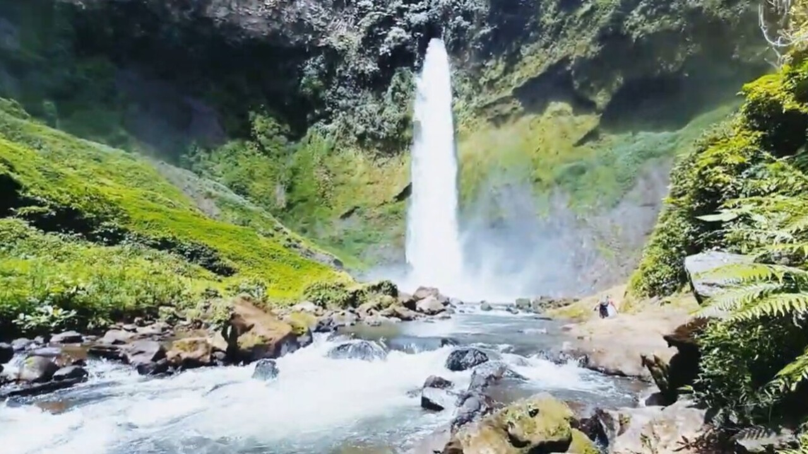

Air Terjun Bale
Air Terjun Bale, atau Curup Bale, merupakan surga tersembunyi di Desa Tunggul Bute, Kecamatan Kota Agung, Kabupaten Lahat, Sumatera Selatan, dengan ketinggian sekitar 65–70 meter yang menghadirkan aliran air deras yang jatuh membentuk kolam alami jernih di bawahnya. Untuk mencapai lokasi ini, pengunjung harus menempuh perjalanan menantang sekitar 1 hingga 1,5 jam melalui jalur trekking yang curam dan melewati hutan lebat, namun semua lelah akan terbayar dengan keindahan alam yang memukau seperti kabut air yang membentuk pelangi, kupu-kupu kuning yang beterbangan, serta bunga-bunga liar di sekitar air terjun. Meskipun berenang di bawah air terjun tidak disarankan karena arus yang kuat, pengunjung tetap bisa bermain air di tepian, berfoto, atau menikmati udara sejuk pegunungan. Air Terjun Bale menawarkan pengalaman petualangan sekaligus tempat healing alami yang cocok bagi pecinta alam, dilengkapi dengan fasilitas sederhana seperti area parkir dan jasa pemandu lokal.
Kembali